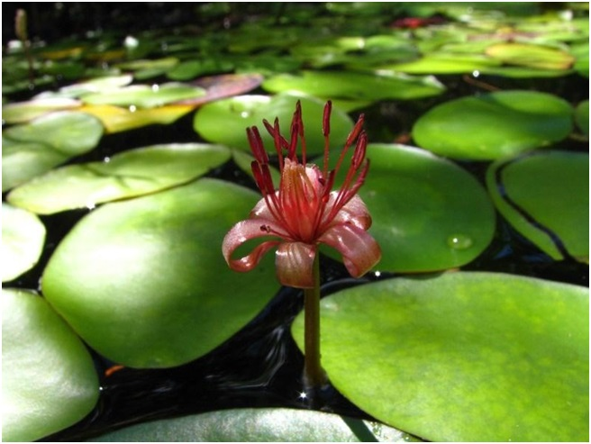
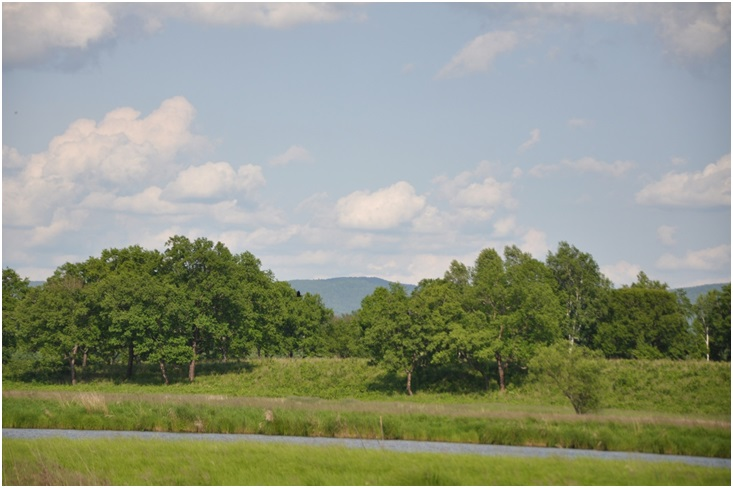

24. Маньчжурка
Памятник природы областного значения "Маньчжурка" образован 11 ноября 2008 года в целях сохранения природного комплекса озера Большое, которое является местом обитания редких водных растений.
🌿 Памятник природы расположен на территории Еврейской автономной области, в Облученском муниципальном районе, в 7 км севернее с. Радде.
💦 В системе озер Маньчжурка самое крупное озеро - Большое. Озеро пойменного происхождения, имеет вытянутую форму, его длина около 1 км, ширина до 100 м. По химическому составу вода озера относится к пресной.
🏵 На территории памятника природы преобладают водный и околоводный типы растительных группировок. В озере произрастают водные виды растений, в том числе и редкие: кальдезия почковидная - новый для ЕАО вид, занесенный в Красную книгу РФ со статусом вида, сокращающегося в численности в результате изменения условий его существования на северной границе ареала; бразения Шребера - реликтовое водное растение, занесенное в Красную книгу РФ, впервые отмеченное в Облученском муниципальном районе; рогульник (водяной орех, чилим) - редкий вид с ограниченным ареалом; кубышка малая (Nupharpumila) - сокращающийся в численности вид, реликт третичной флоры.

